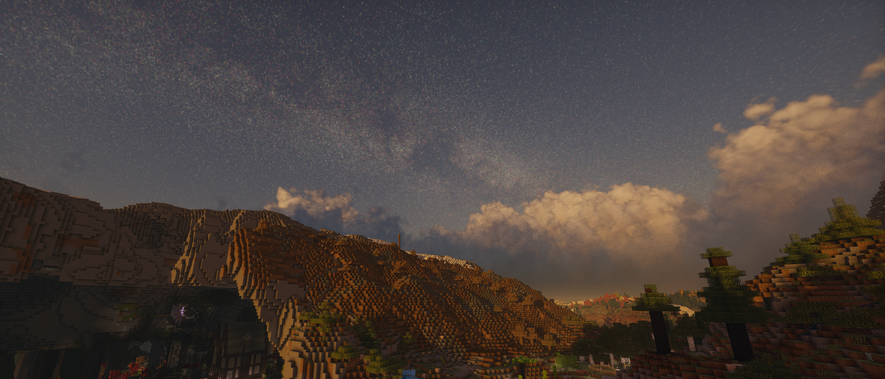
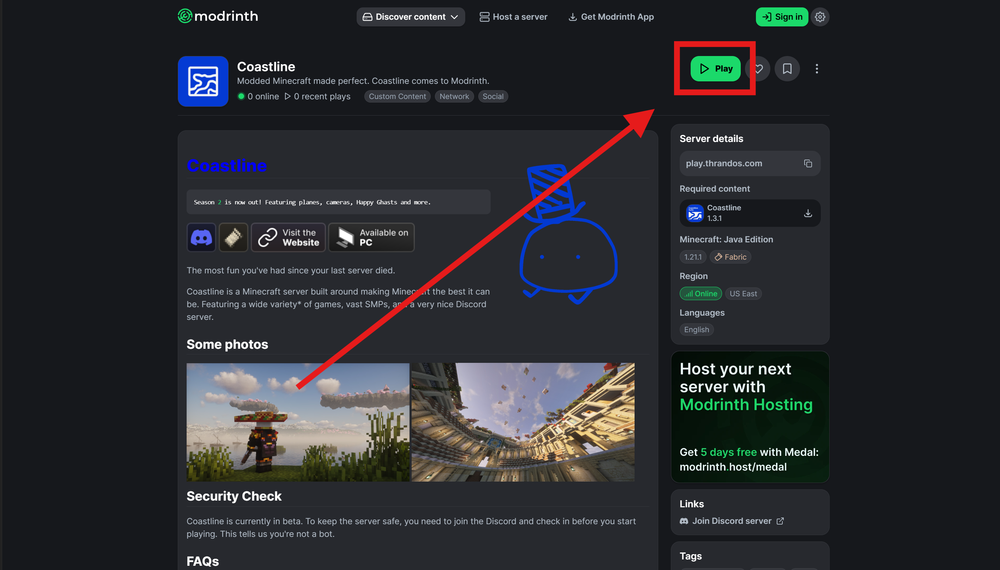

It is . You should be in-game before .**This is an estimation. The time doesn't update unless you reload the page.

Download and install the Modrinth App.
We use Modrinth for its user-friendly UI and easy update delivery. Curseforge support may eventually be added, though it is unlikely.

Go to our page on Modrinth and press Play.
The app should open and the game should download.
You can find the game instance later on the sidebar or the Library tab.